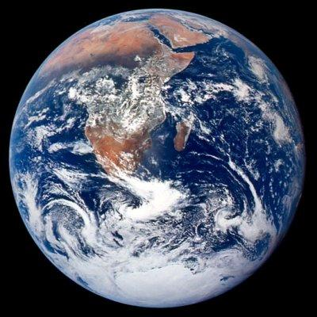
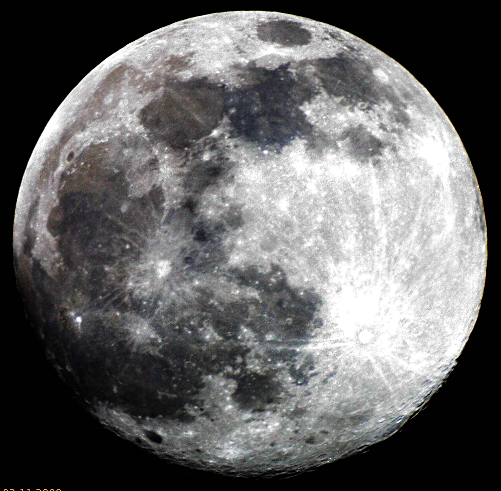

Odległość od Słońca w mln km: 149,6
Okres obiegu wokół Słońca: 365 dni 6h
Okres rotacji: 23 h 56 min
Średnica (km): 12752
Masa (Ziemia = 1): 1,000
Objętość (Ziemia = 1): 1,00
Gęstość (g/cm³): 5,52
Prędkość ruchu po orbicie (km/s): 29,8
Liczba znanych księżyców: 1
Ziemia jest trzecią planetą od Słońca i jedyną, na której istnieje życie (bynajmniej dotychczas nie udowodniono go na innych planetach naszego Układu Słonecznego). Uważa się, że powstała ona około 4,6 miliarda lat temu, a jej temperatura wynosiła wtedy 4000°C. Wyjątkowość Ziemi polega na tym, że występuje na niej woda i zawierająca tlen atmosfera. W grudniu Ziemia znajduje się nieco bliżej Słońca, a w czerwcu jest najbardziej od niego oddalona. Oś Ziemi jest nachylona w stosunku do Słońca, dzięki czemu mamy pory roku. Obroty Ziemi wokół własnej osi powodują zjawiska dnia i nocy.
Atmosfera Ziemi składa się głównie z azotu i tlenu, ma grubość około 100 km i składa się z kilku warstw. Jedną z najważniejszych jest warstwa ozonowa, która rozciąga się na wysokości ok. 20-35 km i pełni rolę tarczy osłaniającej nas przed szkodliwym promieniowaniem. Początkowo na Ziemi nie było oceanów. Powstały one dopiero wskutek wybuchów wulkanów, które po emisji dużej ilości gazów tworzyły chmury, przez co zaczęły padać deszcze. Było to pierwszym czynnikiem, który wpłynął na powstanie na Ziemi życia.
Atmosfera Ziemi składa się głównie z azotu i tlenu, ma grubość około 100 km i składa się z kilku warstw. Jedną z najważniejszych jest warstwa ozonowa, która rozciąga się na wysokości ok. 20-35 km i pełni rolę tarczy osłaniającej nas przed szkodliwym promieniowaniem. Początkowo na Ziemi nie było oceanów. Powstały one dopiero wskutek wybuchów wulkanów, które po emisji dużej ilości gazów tworzyły chmury, przez co zaczęły padać deszcze. Było to pierwszym czynnikiem, który wpłynął na powstanie na Ziemi życia.

Księżyc jest jedynym satelitą naturalnym Ziemi. Jego średnica wynosi 3476 km, a odległość od Ziemi 380 tys. km. Jego przyciąganie grawitacyjne powoduje na Ziemi przypływy i odpływy mórz i oceanów. Księżyc ma różne fazy, gdyż istnieją na nim dni i noce, przez co czasem jego widoczna część znajduje się w cieniu. Księżyc okrąża Ziemię w czasie 27,3 dnia, tyle samo co jego obrót wokół własnej osi. Powoduje to, że zawsze widzimy tylko jedną jego stronę.
Na powierzchni naszego naturalnego satelity znajdują się ogromne zagłębienia, które powstawały po upadkach meteorytów. Wypełniła je lawa, a astronomowie nazwali je "morzami". Jedno z nich, Morze Spokoju, ma 1000 km średnicy. To właśnie tutaj w 1969 roku człowiek po raz pierwszy postawił stopę na Księżycu, a był nim Neil Armstrong. Naukowcy nie są pewni co do tego, w jaki sposób powstał Księżyc. Mógł kiedyś stanowić jedność z Ziemią i oderwać się od niej, ale również oba ciała mogły się utworzyć oddzielnie, po czym Księżyc byłby przechwycony przez grawitacyjne przyciąganie Ziemi.
Na powierzchni naszego naturalnego satelity znajdują się ogromne zagłębienia, które powstawały po upadkach meteorytów. Wypełniła je lawa, a astronomowie nazwali je "morzami". Jedno z nich, Morze Spokoju, ma 1000 km średnicy. To właśnie tutaj w 1969 roku człowiek po raz pierwszy postawił stopę na Księżycu, a był nim Neil Armstrong. Naukowcy nie są pewni co do tego, w jaki sposób powstał Księżyc. Mógł kiedyś stanowić jedność z Ziemią i oderwać się od niej, ale również oba ciała mogły się utworzyć oddzielnie, po czym Księżyc byłby przechwycony przez grawitacyjne przyciąganie Ziemi.